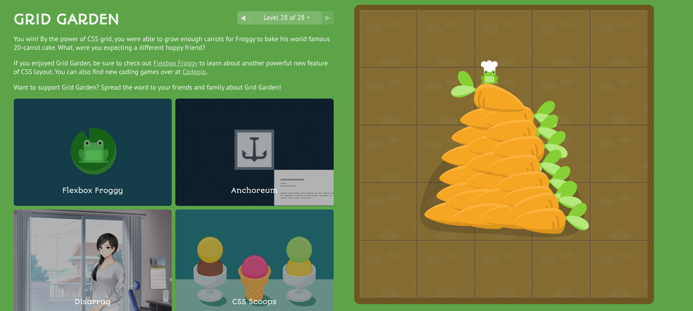
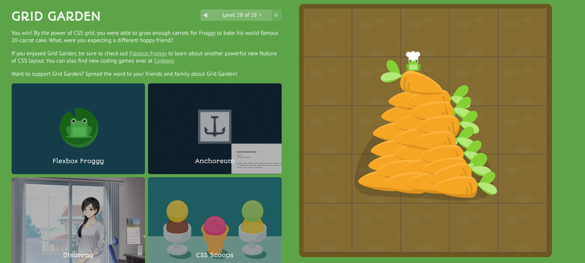
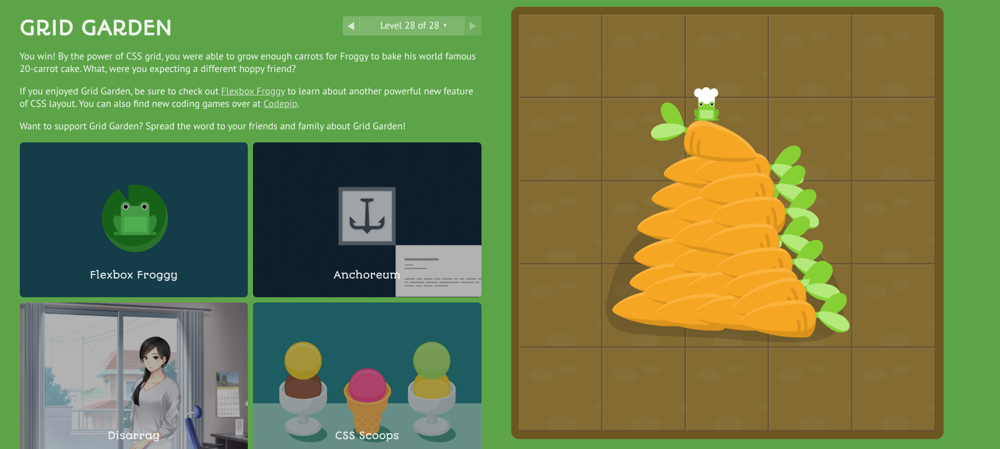

Miles Searcy
Prototype HTML5 Assignment
CSS Demo
Positioning Lab
Absolute-1
Absolute-2
Float-1
Float-2
CSS Grid Lab
Two Column Right
Two Colunm Left
Two column Equal
Two column Stack
First Draft
Final Draft
image lab
Final Writing assignment
While being in this class I learned a lot about web design and myself. For example, I hate designing things. I am talentless at design. Even though I did hate having to design things, it felt useful to learn how the back end can connect to the front end. I don’t have much to say about the learning process though to me it felt just like another day. I have basically taught myself an unbelievable amount of code including javascript which I used in my final project. So to me asking me to reflect on the learning experience of this class over the semester is like asking me how it felt walking to class. It's just what I do. Coding is my hobby and this class just added to my hobby but if I could find a way to describe it I would say challengingly fun. What I felt I did well was the coding part of this class. What I felt I did poorly was the design aspect. If I could go back and do things differently I would have my girlfriend who loves art draw me a template for the website then I would create a code to reflect it.
The only recommended changes I received for my first design was to sort the table alphabetically, reformat the search bar, change the font, add the item sprites to the table, and fix FAQ question one to be more specific. The changes I decided to make were reformatting the search bar to look a little more modern, change the font for readability, add the item sprites to the table, and fix the FAQ question. The reason I did not add the ability to sort the table alphabetically is because I felt that it would take a lot of time to add that functionality using java script which I already sunk plenty of time into, while javascript is out of scope for this assignment.


 
